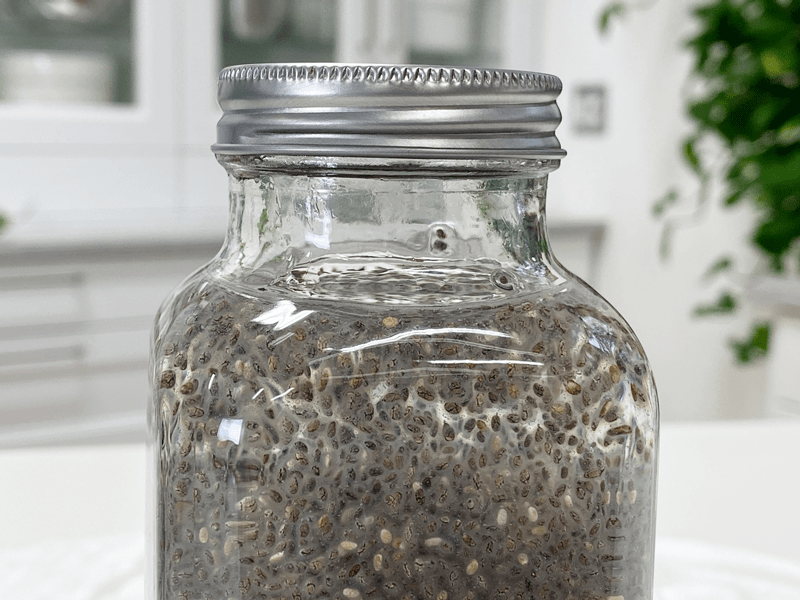
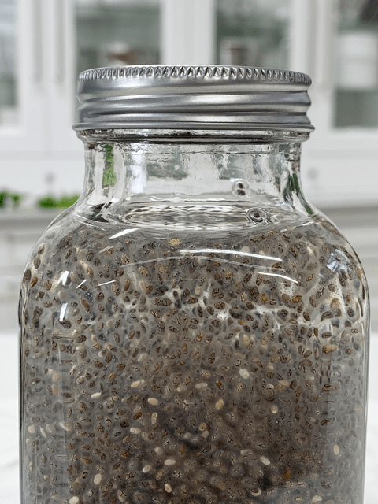

Chia Seed Gel (thickener, binder)
So what is so special about chia seeds? Well, a lot of things actually. I won’t go into full detail, but for the sake of creating a chia gel, I want to touch on a few things. First of all, chia’s hydrophilic structure holds water, so when mixed with liquid, it displaces calories and fats without compromising flavor.

When combined with water or liquid, Chia can absorb 9 – 12 times its weight in water. What does this mean for you? Hydrated chia slows digestion, and the time it takes for your stomach to empty, which means you feel full longer. To do this, you will need to soak the chia seeds to activate them, making it more bio-available to your body, which helps in reducing blood sugar spikes, decreasing cholesterol, and will keep you hydrated longer. To learn more about chia seeds, please click (here).
How to Use Chia Gel
Add this mixture to sauces, drinks, yogurt, salad dressings, cashew cream cheese, jams, jellies, salsa, hot/cold cereals, dips, puddings, soups, or other liquid or creamy foods. The gel won’t affect the flavor but definitely, increases nutritional value. If you don’t like the texture of the seeds, you can first grind them to a powder.
Check out my recipe for Strawberry Lemonade Chia Seed Drink, where I used chia seeds gel as the base.

Ingredients:
- 1/3 cup chia seeds
- 2 cups water
Preparation:
- Combine the chia seeds and water in a mason jar with a tight lid. Shake for 15 seconds.
- Let stand for at least 10 minutes to thicken. Shake before use.
- You don’t need to soak your chia seeds longer, but it does help to maximize the benefits. I prefer to let it soak overnight before using it if time permits.
- This mixture will keep in the fridge for 2 – 3 weeks.
- You can modify this recipe to suit your needs. For example, you may prefer to grind the seeds (and thereby release the essential fats for better assimilation).
- Or you may prefer to use more water to achieve a less thick gel. Play with the process until you discover what works best for you. Get creative with it!
© AmieSue.com